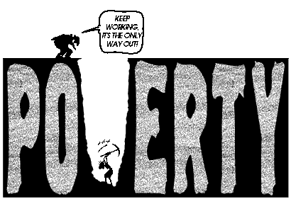

Toastmasters Debate Night
November 4th, 2014
Presentation based on reveal.js
Democracy must be built through open societies that share information. When there is information, there is enlightenment. When there is debate, there are solutions. When there is no sharing of power, no rule of law, no accountability, there is abuse, corruption, subjugation and indignation. — Atifete Jahjaga
5 Common Logical Fallacies
- Strawman
Misrepresentation of the opponent's argument - Ad Hominem
Attacking the opponent rather than their idea - Black & White
Presenting a false dichotomy (e.g. with us or against us) - Authority
Citing a false authority - No True Scotsman
Redefining a set to exclude inconvenient elements
Individual Debate
- Speakers alternate, affirmative speaker first, two turns each
- 2 minutes each turn. Buzzer sounds at 2 minutes
Team Debate
- Topic is only announced at beginning of debate
- Affirmative team speaks first
- First speaker has 30 seconds to prepare
- First speaking round is 1:30 minute
- Second speaker speaks right after the first speaker finishes
- 1 minute preparation break
- Third speaker (second affirmative speaker) speaks
- Fourth speaker (second opposition speaker) speaks
Panel Debate
- 3+ panellists are chosen to introduce/defend/discuss a topic provided by the chair
- Audience members are encouraged to ask questions, both politely, and by rude interruption. These members can pretend to represent certain roles or positions in society, etc.
- Panellists speak at will
- Intent is to be chaotic
- 10 minute duration (after 1 minute prep)
Debate Evaluations
- No formal structure
- Effectiveness of argument
- What each side could have done to win
- Why a side loss
Individual Debate: Topic
Should the height limit for downtown buildings be removed in Ottawa?
Tall buildings concentrate more people downtown resulting in less commuting, increased tax base and civic pride. Toronto and even Mississauga have no problem building builds of 50 stories or more, yet Ottawa, Canada's Capital must be restricted to teeny tiny buildings.
Team Debate: Topic
Should humanity strive for immortality?
Pizza!
Panel Debate: Topic
Canadian Government announces the abolishment of minimum wage
Evaluations
FIN
Themes
Reveal.js comes with a few themes built in:
Default -
Sky -
Beige -
Simple -
Serif -
Night
Moon -
Solarized
* Theme demos are loaded after the presentation which leads to flicker. In production you should load your theme in the <head> using a <link>.
Fragmented Views
Hit the next arrow...
... to step through ...
any type- of view
- fragments
Fragment Styles
There's a few styles of fragments, like:
grow
shrink
roll-in
fade-out
highlight-red
highlight-green
highlight-blue
current-visible
highlight-current-blue
Spectacular image!